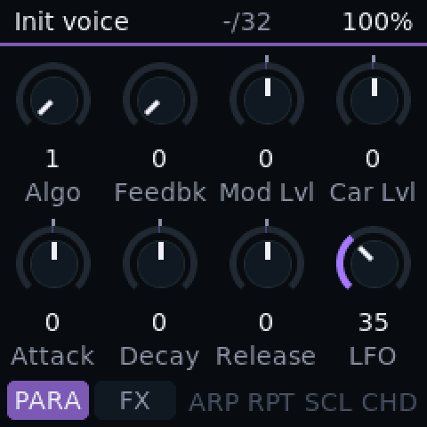

Also
And the rest of the toolbox.
Smaller things that make the keyboard easier to live with.
What it does
- 1
Preset editor in the browser Test build
Open MIDI Suite exports, edit every control, send presets to the keyboard. Works in Chrome or Edge, nothing to install.
- 2
DX7 SysEx import Test build
DX7 cartridges of 32 voices and single voices load from the installer page.
- 3
Virus patch library Test build
Any Access Virus single patch you own can be sent to Viroid.
- 4
Bluetooth MIDI Test build
In the Bluetooth builds the keyboard also plays as a Bluetooth LE MIDI device. It has worked with a Mac.
- 5
USB audio out Test build
The synth as a stereo input on your computer, over the same cable as MIDI.
- 6
Mixer Test build
Levels, pan and sends for the synth and the USB input, with a master volume and balance.
- 7
Capture Test build
The last phrase you played, made into a pattern after the fact.
- 8
Patch pads Test build
Eight patches per engine one tap away.
- 9
Two cores, 382 MHz Verified on unit
The chip's second core renders half the voices, and the clock is raised on start-up, measured on the unit.
- 10
Latin and Cyrillic text Test build
The screen font covers Latin and Cyrillic letters.
- 11
Battery and power Test build
Battery bars and warnings when running on battery; a different indicator on USB power.
On the screen
